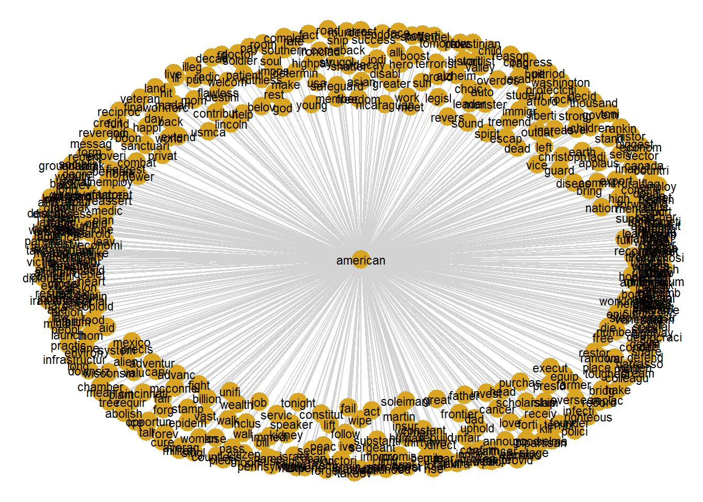
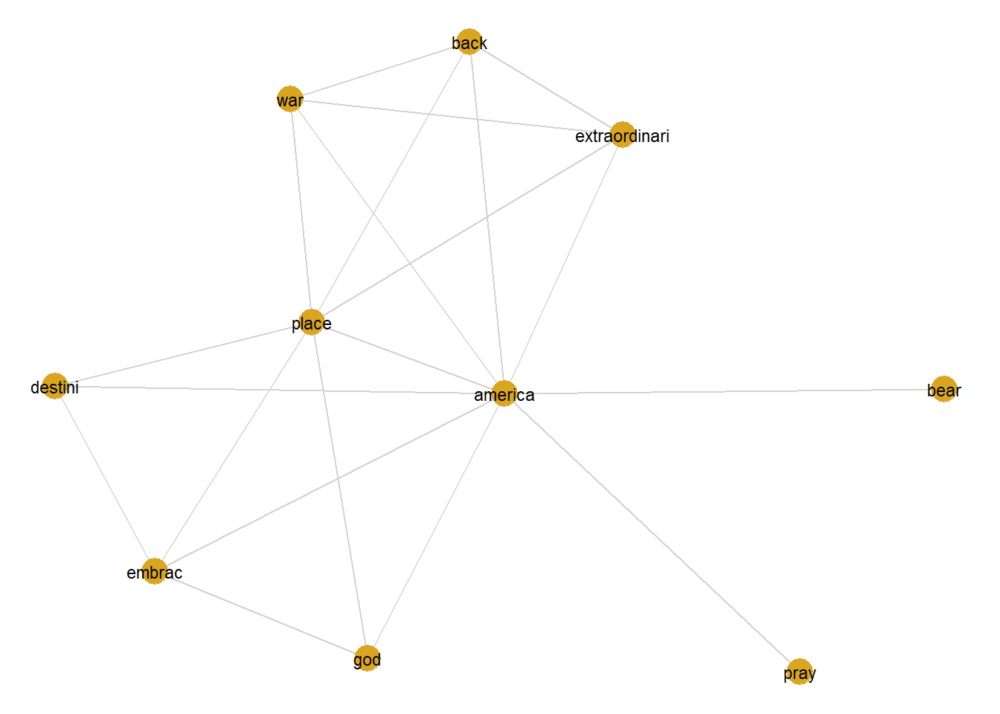
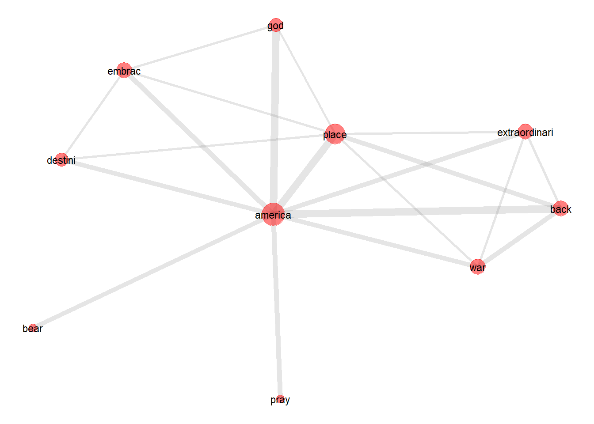

Co-occurrence and Collocations
Martin Schweinberger
2020-04-14

1 Introduction
This tutorial introduces collocation and co-occurrence analysis with “R”. It is shown how different significance measures can be used to extract semantic links between words and how such links can be displayed. Parts of this tutorial build on . The entire code for the sections below can be downloaded here.
How would you find words that are associated with a specific term and how can you visualize such word nets? This tuturial addresses this issue by focusing on co-occurrence and collocations of words. Collocations are words that occur very frequently together. For example, “Merry Christams” is a collocation because “merry” and “Christmas” occur more frequently together than would be expected by chance. This means that if you were to shuffle all words in a corpus and would then test the frequency of how often “merry” and “Christmas” co-occured, they would occur significantly less often in the shuffeled or randomized corpus than in a corpus that contain non-shuffeled natural speech.
But how can you determine if words occur more frequently together than would be expected by chance? This tutorial will answer this question.
2 Preparation and session set up
As all caluculations and visualizations in this tutorial rely on “R”, it is necessary to install “R” and “RStudio”. If these programms (or, in the case of “R”, environments) are not already installed on your machine, please search for them in your favorite search engine and add the term “download”. Open any of the first few links and follow the installation instructions (they are easy to follow, do not require any specifications, and are pretty much self-explanatory).
In addition, certain “libraries” or “packages” need to be installed so that the scripts shown below are executed without errors. Before turning to the code below, please install the librariesby running the code below this paragraph. If you have already installed the libraries mentioned below, then you can skip ahead ignore this section. To install the necessary libraries, simply run the following code - it may take some time (between 1 and 5 minutes to install all of the libraries so you do not need to worry if it takes some time).
# clean current workspace
rm(list=ls(all=T))
# set options
options(stringsAsFactors = F) # no automatic data transformation
# load packages
# for data porcessing
library(corpus)
library(dplyr)
library(quanteda)
library(stringr)
library(tidyr)
library(tm)
# for visualization
library(GGally)
library(network)
library(sna)
library(ggplot2)Once you have installed “R” and “R-Studio”, and have also initiated the session by executing the code shown above, you are good to go.
3 Collocations in Trump’s 2020 SOTU address
In the following example, we will analyze which words collocate with the term america in Trump’s 2020 State of the Union address. The analysis consists of the following steps:
Data processing
Creating a cooccurence matrix
Finding significant collocations
Extracting the network of collocations
Visualizing the network of collocations
3.1 Data processing
We start the analysis by loading the tm package and the data.
# define collocterm
collocterm <- "america"
# load data
textdata <- readLines("https://SLCLADAL.github.io/data/sotutrump.txt",
skipNul = T, encoding = "unknown")
# inspect data
str(textdata)## chr [1:257] "THE PRESIDENT: Thank you very much. Thank you. Thank you very much." ...The separation of the text into semantic analysis units is important for co-occurrence analysis. Context windows can be for instance documents, paragraphs or sentences or neighboring words. One of the most frequently used context window is the sentence. The sentence segmentation must take place before the other preprocessing steps because the sentence-segmentation-model relies on intact word forms and punctuation marks.
# clean data
textdata <- gsub("AUDIENCE:.*", "", textdata)
textdata <- gsub(" {2,}", " ", textdata)
textdata <- str_replace_all(textdata, "THE PRESIDENT:", "")
textdata <- str_replace_all(textdata, "Mr.", "Mr")
textdata <- gsub("\\(applause.{0,1}\\)", "", textdata)
textdata <- gsub("\\(APPLAUSE.{0,1}\\)", "", textdata)
textdata <- paste(textdata, collapse = " ")
textdata <- str_squish(textdata)
textdata <- stripWhitespace(textdata)
# split text into sentences
sentences <- unlist(strsplit(as.character(textdata), "(?<=\\.)\\s(?=[A-Z])", perl = T))
# inspect data
head(sentences)## [1] "Thank you very much."
## [2] "Thank you."
## [3] "Thank you very much."
## [4] "Madam Speaker, Mr Vice President, members of Congress, the First Lady of the United States — — and my fellow citizens: Three years ago, we launched the great American comeback."
## [5] "Tonight, I stand before you to share the incredible results."
## [6] "Jobs are booming, incomes are soaring, poverty is plummeting, crime is falling, confidence is surging, and our country is thriving and highly respected again. (Applause.) America’s enemies are on the run, America’s fortunes are on the rise, and America’s future is blazing bright."A word of warning is in order here: the newly decomposed corpus has now reached a considerable size of 268 sentences. Older computers may get in trouble because of insufficient memory during this preprocessing step.
Now we going to implement a pre-processing chain and apply it on the separated sentences. Preprocessing consists of cleaning the data by removing punctuation, numbers, superfluous white spaces, and so-called stopwords which do not have semantic meaning.
# convert to lower case
sentencesclean <- tolower(sentences)
# remove punctuation
sentencesclean <- removePunctuation(sentencesclean)
# remove non alphanumeric characters
sentencesclean <- gsub("[^[:alnum:][:space:]_]", "", sentencesclean)
# remove numbers
sentencesclean <- removeNumbers(sentencesclean)
# remove stop words
english_stopwords <- readLines("https://slcladal.github.io/resources/stopwords_en.txt", encoding = "UTF-8")
sentencesclean <- removeWords(sentencesclean, english_stopwords)
# strip white spaces
sentencesclean <- str_squish(sentencesclean)
sentencesclean <- stripWhitespace(sentencesclean)
# remove emplty elements
sentencesclean <- sentencesclean[sentencesclean != ""]
# stem words
sentencesclean <- as.vector(sapply(sentencesclean, function(x){
x <- text_tokens(x, stemmer = "en")
x <- as.vector(unlist(x))
x <- stringr::str_c(x, sep = " ", collapse = " ")}))
# select a sample
#sentencesclean <- sample(sentencesclean, 100)
# inspect data
head(sentencesclean)## [1] "madam speaker mr vice presid member congress ladi unit state fellow citizen year ago launch great american comeback"
## [2] "tonight stand share incred result"
## [3] "job boom incom soar poverti plummet crime fall confid surg countri thrive high respect applaus america enemi run america fortun rise america futur blaze bright"
## [4] "year econom decay applaus day countri advantag scorn nation long applaus broken promis jobless recoveri tire platitud constant excus deplet american wealth power prestig"
## [5] "short year shatter mental american declin reject downsiz america destini"
## [6] "total reject downsiz"4 Creating a co-occurrence matrix
In a next step, we create a co-occurence matrix from the words in the sentences.
sentencecorpus <- Corpus(VectorSource(sentencesclean))
DTM <- DocumentTermMatrix(sentencecorpus, control=list(bounds = list(global=c(1, Inf)), weighting = weightBin))
# Convert to sparseMatrix matrix
require(Matrix)
DTM <- sparseMatrix(i = DTM$i,
j = DTM$j,
x = DTM$v,
dims = c(DTM$nrow, DTM$ncol),
dimnames = dimnames(DTM))
# Matrix multiplication for cooccurrence counts
coocCounts <- t(DTM) %*% DTM
cooc <- as.matrix(coocCounts)
cooc[1:5, 1:5]## ago american citizen comeback congress
## ago 12 2 1 1 2
## american 2 45 2 1 8
## citizen 1 2 8 1 2
## comeback 1 1 1 1 1
## congress 2 8 2 1 12The matrix has nrow(cooc) rows and columns and is symmetric. Each cell contains the number of joint occurrences. In the diagonal, the frequencies of single occurrences of each term are encoded.
The part of the cooccurence matrix that is displayed shows that comeback appears together 1 times with congress in the 1222 sentences of the SUTO addresses. comeback alone occurs 1 times.
We can also use this cooccurence table to cerate a cooccurence graph.
simplecooctb <- cooc[rownames(cooc) == "american",]
simplecoocdf <- data.frame(rep("american", length(simplecooctb)),
names(simplecooctb),
simplecooctb)
colnames(simplecoocdf) <- c("Term", "Cooc", "Freq")
simplecoocdf## Term Cooc Freq
## ago american ago 2
## american american american 45
## citizen american citizen 2
## comeback american comeback 1
## congress american congress 8
## fellow american fellow 2
## great american great 3
## ladi american ladi 1
## launch american launch 3
## madam american madam 1
## member american member 4
## presid american presid 3
## speaker american speaker 1
## state american state 7
## unit american unit 6
## vice american vice 1
## year american year 8
## incred american incred 0
## result american result 1
## share american share 1
## stand american stand 3
## tonight american tonight 4
## america american america 10
## applaus american applaus 28
## blaze american blaze 0
## boom american boom 0
## bright american bright 0
## confid american confid 0
## countri american countri 3
## crime american crime 0
## enemi american enemi 0
## fall american fall 0
## fortun american fortun 0
## futur american futur 1
## high american high 2
## incom american incom 0
## job american job 4
## plummet american plummet 0
## poverti american poverti 1
## respect american respect 0
## rise american rise 1
## run american run 1
## soar american soar 0
## surg american surg 0
## thrive american thrive 0
## advantag american advantag 1
## broken american broken 1
## constant american constant 1
## day american day 2
## decay american decay 1
## deplet american deplet 1
## econom american econom 2
## excus american excus 1
## jobless american jobless 1
## long american long 3
## nation american nation 6
## platitud american platitud 1
## power american power 3
## prestig american prestig 1
## promis american promis 2
## recoveri american recoveri 1
## scorn american scorn 1
## tire american tire 1
## wealth american wealth 1
## declin american declin 3
## destini american destini 1
## downsiz american downsiz 1
## mental american mental 2
## reject american reject 2
## shatter american shatter 1
## short american short 2
## total american total 1
## back american back 3
## economi american economi 1
## forward american forward 1
## move american move 0
## pace american pace 0
## report american report 0
## thrill american thrill 0
## time american time 2
## unimagin american unimagin 0
## close american close 0
## complet american complet 1
## militari american militari 2
## rebuilt american rebuilt 0
## unmatch american unmatch 0
## world american world 4
## border american border 2
## secur american secur 1
## famili american famili 4
## flourish american flourish 0
## renew american renew 0
## valu american valu 1
## pride american pride 0
## restor american restor 2
## build american build 2
## communiti american communiti 0
## demonstr american demonstr 0
## even american even 0
## extraordinari american extraordinari 0
## inclus american inclus 1
## join american join 1
## lay american lay 0
## part american part 0
## peopl american peopl 5
## prosper american prosper 0
## reason american reason 1
## societi american societi 1
## stronger american stronger 0
## success american success 1
## union american union 0
## unparallel american unparallel 0
## vision american vision 1
## agenda american agenda 0
## agreement american agreement 0
## cut american cut 0
## enact american enact 0
## fair american fair 3
## fight american fight 1
## histor american histor 3
## instant american instant 0
## jobkil american jobkil 0
## number american number 3
## offic american offic 0
## proamerican american proamerican 0
## profamili american profamili 0
## progrowth american progrowth 0
## prowork american prowork 0
## rapid american rapid 0
## reciproc american reciproc 1
## record american record 4
## recordset american recordset 0
## regul american regul 0
## relentless american relentless 0
## reviv american reviv 0
## slash american slash 0
## tax american tax 1
## trade american trade 2
## advanc american advanc 2
## color american color 0
## creed american creed 0
## lift american lift 1
## optim american optim 0
## race american race 0
## religion american religion 0
## unbridl american unbridl 0
## administr american administr 7
## averag american averag 1
## centuri american centuri 0
## creat american creat 1
## elect american elect 0
## expert american expert 0
## govern american govern 3
## half american half 0
## histori american histori 2
## lower american lower 0
## lowest american lowest 2
## million american million 8
## previous american previous 3
## project american project 0
## rate american rate 2
## true american true 0
## unemploy american unemploy 2
## african american african 1
## alltim american alltim 2
## asian american asian 1
## fail american fail 3
## hadnt american hadnt 1
## hispan american hispan 1
## level american level 2
## low american low 2
## polici american polici 2
## reach american reach 2
## revers american revers 2
## wit american wit 1
## women american women 3
## youth american youth 1
## achiev american achiev 3
## diploma american diploma 1
## disabl american disabl 1
## drop american drop 2
## employ american employ 1
## fill american fill 1
## food american food 2
## percent american percent 3
## roll american roll 1
## school american school 4
## stamp american stamp 2
## veteran american veteran 2
## worker american worker 3
## young american young 3
## welfar american welfar 1
## workforc american workforc 2
## workingag american workingag 1
## believ american believ 0
## bluecollar american bluecollar 0
## bottom american bottom 0
## decad american decad 1
## earner american earner 0
## fast american fast 0
## faster american faster 0
## fastest american fastest 0
## flat american flat 0
## highest american highest 0
## household american household 0
## increas american increas 1
## lowincom american lowincom 0
## market american market 0
## median american median 0
## net american net 0
## pay american pay 1
## real american real 0
## stock american stock 0
## top american top 0
## transcend american transcend 0
## trillion american trillion 2
## wage american wage 0
## wonder american wonder 0
## worth american worth 0
## admir american admir 0
## amaz american amaz 0
## consum american consum 0
## pension american pension 0
## area american area 0
## compani american compani 2
## deserv american deserv 0
## energi american energi 0
## excit american excit 0
## havent american havent 0
## invest american invest 2
## money american money 0
## neglect american neglect 0
## neighborhood american neighborhood 0
## opportun american opportun 5
## plan american plan 6
## poor american poor 0
## pour american pour 0
## republican american republican 0
## scott american scott 0
## senat american senat 3
## spearhead american spearhead 0
## tim american tim 0
## wealthi american wealthi 0
## word american word 0
## zone american zone 1
## work american work 4
## armi american armi 2
## cincinnati american cincinnati 1
## help american help 1
## ohio american ohio 2
## rankin american rankin 1
## toni american toni 1
## addict american addict 0
## drug american drug 1
## hous american hous 0
## lost american lost 0
## struggl american struggl 2
## homeless american homeless 0
## construct american construct 0
## found american found 0
## drugfre american drugfre 0
## reunit american reunit 0
## tradesman american tradesman 0
## abil american abil 0
## fresh american fresh 0
## prison american prison 0
## roar american roar 0
## start american start 0
## chanc american chanc 0
## crimin american crimin 1
## justic american justic 2
## landmark american landmark 0
## law american law 2
## life american life 1
## made american made 3
## pass american pass 3
## reform american reform 0
## bold american bold 0
## campaign american campaign 0
## couldnt american couldnt 0
## element american element 0
## gas american gas 0
## independ american independ 0
## natur american natur 0
## oil american oil 0
## past american past 0
## produc american produc 0
## progress american progress 0
## reduct american reduct 0
## regulatori american regulatori 0
## room american room 1
## thought american thought 0
## tremend american tremend 1
## likewis american likewis 0
## manufactur american manufactur 0
## predict american predict 0
## action american action 2
## biggest american biggest 1
## built american built 2
## come american come 1
## deal american deal 1
## decid american decid 1
## disastr american disastr 1
## fact american fact 1
## factori american factori 2
## gain american gain 2
## leav american leav 2
## lose american lose 1
## nafta american nafta 1
## place american place 1
## plant american plant 3
## replac american replac 2
## singl american singl 2
## thousand american thousand 2
## unfair american unfair 1
## usa american usa 2
## adopt american adopt 0
## absolut american absolut 0
## chang american chang 0
## happen american happen 0
## pledg american pledg 2
## politician american politician 0
## unlik american unlik 0
## brandnew american brandnew 0
## sign american sign 1
## usmexicocanada american usmexicocanada 0
## auto american auto 1
## boost american boost 1
## bring american bring 2
## canada american canada 1
## degre american degre 1
## export american export 1
## farmer american farmer 1
## greater american greater 1
## higher american higher 1
## highpay american highpay 1
## massiv american massiv 1
## mexico american mexico 1
## rancher american rancher 1
## usmca american usmca 1
## china american china 0
## confront american confront 0
## earn american earn 0
## final american final 1
## impos american impos 1
## labor american labor 0
## major american major 1
## strong american strong 2
## tariff american tariff 0
## theft american theft 0
## treat american treat 0
## strategi american strategi 0
## billion american billion 1
## defend american defend 3
## dollar american dollar 0
## groundbreak american groundbreak 1
## grown american grown 0
## intellectu american intellectu 0
## open american open 0
## product american product 0
## properti american properti 0
## protect american protect 3
## treasuri american treasuri 0
## vast american vast 1
## includ american includ 1
## relationship american relationship 0
## weve american weve 0
## frank american frank 0
## rebuild american rebuild 1
## step american step 1
## cuba american cuba 1
## cuban american cuban 1
## democraci american democraci 1
## freedom american freedom 4
## hemispher american hemispher 1
## hope american hope 1
## leadership american leadership 1
## nicaraguan american nicaraguan 1
## support american support 4
## venezuelan american venezuelan 2
## brutal american brutal 0
## coalit american coalit 0
## dictat american dictat 0
## diplomat american diplomat 0
## illegitim american illegitim 0
## lead american lead 0
## maduro american maduro 0
## nicolá american nicolá 0
## ruler american ruler 0
## socialist american socialist 1
## tyrant american tyrant 0
## venezuela american venezuela 0
## grip american grip 0
## smash american smash 0
## tyranni american tyranni 0
## aspir american aspir 0
## brave american brave 0
## carri american carri 0
## dream american dream 2
## man american man 2
## galleri american galleri 0
## guaidó american guaidó 0
## homeland american homeland 0
## juan american juan 0
## legitim american legitim 0
## messag american messag 2
## honor american honor 0
## righteous american righteous 1
## destroy american destroy 1
## social american social 1
## alli american alli 1
## contribut american contribut 2
## doubl american doubl 1
## equip american equip 1
## finest american finest 1
## form american form 1
## liberti american liberti 1
## meet american meet 1
## minimum american minimum 1
## missil american missil 1
## nato american nato 1
## oblig american oblig 1
## plane american plane 1
## purchas american purchas 1
## rais american rais 1
## recordbreak american recordbreak 1
## rememb american rememb 2
## rocket american rocket 1
## safeguard american safeguard 1
## ship american ship 1
## soul american soul 2
## unifi american unifi 1
## air american air 0
## arm american arm 0
## branch american branch 0
## earlier american earlier 0
## establish american establish 0
## forc american forc 2
## truman american truman 0
## week american week 1
## call american call 2
## import american import 0
## space american space 0
## gentleman american gentleman 0
## bad american bad 0
## iain american iain 0
## lanphier american lanphier 0
## arizona american arizona 0
## eighth american eighth 0
## grader american grader 0
## hes american hes 0
## academi american academi 0
## aviat american aviat 0
## class american class 0
## youngest american youngest 0
## eye american eye 0
## greatest american greatest 0
## hero american hero 1
## laughter american laughter 0
## sit american sit 0
## born american born 0
## charl american charl 0
## cleveland american cleveland 0
## mcgee american mcgee 0
## airmen american airmen 0
## black american black 1
## fighter american fighter 0
## greatgrandfath american greatgrandfath 0
## pilot american pilot 0
## stori american stori 0
## surviv american surviv 0
## tuskege american tuskege 0
## civil american civil 0
## combat american combat 1
## home american home 1
## korea american korea 0
## mission american mission 0
## right american right 0
## serv american serv 1
## vietnam american vietnam 0
## war american war 1
## bill american bill 2
## birthday american birthday 0
## brigadi american brigadi 0
## celebr american celebr 0
## decemb american decemb 0
## general american general 0
## promot american promot 0
## oval american oval 0
## pin american pin 0
## shoulder american shoulder 0
## star american star 0
## today american today 0
## salut american salut 0
## children american children 4
## forg american forg 1
## founder american founder 1
## king american king 1
## limit american limit 1
## lincoln american lincoln 1
## luther american luther 1
## marcher american marcher 1
## martin american martin 1
## pilgrim american pilgrim 1
## reverend american reverend 1
## selma american selma 1
## sir american sir 1
## soldier american soldier 1
## valley american valley 1
## deliv american deliv 1
## forget american forget 1
## heart american heart 1
## love american love 3
## matter american matter 1
## sustain american sustain 1
## victori american victori 1
## washington american washington 1
## educ american educ 3
## make american make 1
## put american put 1
## countless american countless 1
## trap american trap 1
## choic american choic 1
## rescu american rescu 0
## scholarship american scholarship 1
## student american student 1
## list american list 0
## popular american popular 0
## program american program 1
## remain american remain 0
## ten american ten 0
## wait american wait 0
## davi american davi 0
## fourth american fourth 0
## janiyah american janiyah 1
## philadelphia american philadelphia 0
## mom american mom 1
## parent american parent 1
## stephani american stephani 0
## daughter american daughter 0
## give american give 1
## expand american expand 2
## governor american governor 0
## legisl american legisl 5
## pennsylvania american pennsylvania 1
## veto american veto 0
## beauti american beauti 0
## good american good 2
## inform american inform 0
## news american news 0
## pleas american pleas 0
## announc american announc 3
## head american head 1
## proud american proud 3
## receiv american receiv 2
## act american act 2
## child american child 1
## environ american environ 1
## grow american grow 0
## learn american learn 0
## person american person 0
## safe american safe 1
## send american send 0
## generat american generat 0
## healthi american healthi 0
## initi american initi 2
## magnific american magnific 0
## onlin american onlin 0
## care american care 3
## melania american melania 0
## profound american profound 0
## age american age 1
## background american background 0
## determin american determin 1
## provid american provid 4
## budget american budget 0
## afford american afford 1
## colleg american colleg 1
## earth american earth 2
## equal american equal 1
## fund american fund 4
## healthcar american healthcar 6
## highqual american highqual 2
## innov american innov 1
## offer american offer 1
## perman american perman 1
## requir american requir 2
## system american system 3
## technic american technic 1
## univers american univers 1
## vocat american vocat 1
## health american health 3
## insur american insur 2
## premium american premium 0
## altern american altern 0
## quick american quick 0
## condit american condit 1
## expens american expens 1
## ironclad american ironclad 1
## ive american ive 2
## patient american patient 3
## preexist american preexist 1
## medicar american medicar 0
## blindsid american blindsid 1
## medic american medic 1
## amount american amount 0
## begin american begin 0
## bigger american bigger 0
## effect american effect 0
## execut american execut 1
## full american full 0
## order american order 0
## price american price 0
## save american save 0
## substanti american substanti 1
## transpar american transpar 0
## abolish american abolish 1
## doctor american doctor 1
## improv american improv 2
## privat american privat 3
## endors american endors 2
## happi american happi 1
## hundr american hundr 1
## lawmak american lawmak 1
## takeov american takeov 1
## thirtytwo american thirtytwo 1
## wipe american wipe 1
## alien american alien 4
## bankrupt american bankrupt 1
## chamber american chamber 1
## cross american cross 1
## free american free 3
## illeg american illeg 3
## subsid american subsid 1
## taxpay american taxpay 2
## taxpayerfund american taxpayerfund 1
## unlaw american unlaw 1
## watch american watch 1
## benefit american benefit 0
## depend american depend 0
## immigr american immigr 1
## lure american lure 0
## propos american propos 0
## raid american raid 0
## senior american senior 1
## california american california 0
## control american control 0
## cost american cost 0
## unafford american unafford 0
## left american left 1
## radic american radic 2
## sound american sound 1
## unlimit american unlimit 1
## boon american boon 1
## fulli american fulli 2
## guard american guard 1
## mile american mile 1
## period american period 1
## prohibit american prohibit 1
## southern american southern 1
## speak american speak 1
## tall american tall 1
## wall american wall 1
## earli american earli 0
## big american big 0
## pharmaceut american pharmaceut 0
## take american take 0
## approv american approv 0
## clip american clip 0
## current american current 0
## fda american fda 0
## generic american generic 0
## medicin american medicin 0
## prescript american prescript 0
## reduc american reduc 1
## chuck american chuck 0
## grassley american grassley 0
## iowa american iowa 0
## proper american proper 0
## bipartisan american bipartisan 1
## dramat american dramat 0
## goal american goal 0
## commit american commit 1
## curb american curb 0
## desk american desk 0
## epidem american epidem 2
## immedi american immedi 2
## opioid american opioid 1
## unyield american unyield 0
## beaten american beaten 1
## death american death 1
## diseas american diseas 2
## hardest american hardest 1
## hit american hit 1
## infecti american infecti 1
## mean american mean 1
## overdos american overdos 1
## quit american quit 1
## wisconsin american wisconsin 1
## chines american chines 0
## coordin american coordin 0
## coronavirus american coronavirus 0
## outbreak american outbreak 0
## threat american threat 0
## alzheim american alzheim 1
## ambiti american ambiti 2
## kidney american kidney 1
## aid american aid 1
## cancer american cancer 2
## childhood american childhood 1
## cure american cure 1
## diagnos american diagnos 1
## end american end 2
## erad american erad 1
## ill american ill 1
## pain american pain 1
## request american request 1
## belov american belov 1
## diagnosi american diagnosi 1
## special american special 1
## stage american stage 1
## winner american winner 0
## chariti american chariti 0
## civilian american civilian 0
## devot american devot 0
## inspir american inspir 0
## limbaugh american limbaugh 0
## medal american medal 0
## present american present 0
## presidenti american presidenti 0
## recognit american recognit 0
## rush american rush 0
## tireless american tireless 0
## congratul american congratul 0
## kathryn american kathryn 0
## breakthrough american breakthrough 0
## pray american pray 0
## sick american sick 0
## babi american babi 0
## citi american citi 1
## earliest american earliest 0
## hospit american hospit 0
## kansa american kansa 0
## luke american luke 0
## prematur american prematur 0
## elli american elli 0
## pound american pound 0
## schneider american schneider 0
## weigh american weigh 0
## battl american battl 0
## prayer american prayer 0
## skill american skill 0
## win american win 0
## girl american girl 0
## mother american mother 1
## robin american robin 0
## twoyearold american twoyearold 0
## glad american glad 0
## miracl american miracl 0
## remind american remind 0
## modern american modern 0
## thing american thing 0
## ensur american ensur 2
## abort american abort 0
## addit american addit 0
## agre american agre 0
## ban american ban 0
## democrat american democrat 0
## gift american gift 0
## god american god 1
## human american human 1
## lateterm american lateterm 0
## neonat american neonat 0
## research american research 0
## sacr american sacr 0
## sure american sure 0
## access american access 2
## altogeth american altogeth 1
## barrasso american barrasso 1
## bridg american bridg 1
## credit american credit 1
## dad american dad 1
## effort american effort 1
## elimin american elimin 1
## enabl american enabl 1
## extend american extend 1
## extra american extra 1
## father american father 1
## feder american feder 2
## forti american forti 1
## highway american highway 1
## infrastructur american infrastructur 1
## john american john 1
## land american land 1
## model american model 1
## overseen american overseen 1
## paid american paid 1
## recent american recent 1
## rest american rest 1
## road american road 1
## sector american sector 1
## tree american tree 1
## tunnel american tunnel 1
## urg american urg 1
## waitlist american waitlist 1
## highspe american highspe 1
## internet american internet 1
## rural american rural 1
## tomorrow american tomorrow 1
## arrest american arrest 1
## assault american assault 0
## burglari american burglari 0
## charg american charg 0
## enforc american enforc 0
## heroic american heroic 0
## ice american ice 1
## men american men 1
## murder american murder 1
## sexual american sexual 0
## violent american violent 0
## chosen american chosen 0
## sanctuari american sanctuari 2
## tragic american tragic 0
## danger american danger 0
## hand american hand 0
## local american local 0
## offici american offici 0
## polic american polic 0
## prey american prey 0
## public american public 0
## releas american releas 0
## remov american remov 0
## freed american freed 0
## rape american rape 0
## woman american woman 1
## yearold american yearold 1
## york american york 0
## killer american killer 0
## set american set 0
## aliv american aliv 0
## detain american detain 0
## victim american victim 2
## catastroph american catastroph 0
## declar american declar 0
## outrag american outrag 0
## terribl american terribl 1
## convict american convict 0
## prior american prior 0
## robberi american robberi 0
## author american author 0
## dead american dead 1
## gruesom american gruesom 0
## spree american spree 0
## violenc american violenc 0
## daili american daili 0
## shot american shot 0
## vicious american vicious 0
## approach american approach 0
## car american car 0
## chest american chest 0
## conveni american conveni 0
## fire american fire 0
## store american store 0
## walk american walk 1
## weapon american weapon 0
## wild american wild 0
## critic american critic 0
## hijack american hijack 0
## injur american injur 0
## innoc american innoc 0
## truck american truck 0
## vehicl american vehicl 0
## die american die 1
## jone american jone 1
## name american name 1
## rocki american rocki 1
## situat american situat 1
## blood american blood 0
## bullet american bullet 0
## cold american cold 0
## rang american rang 0
## station american station 0
## vile american vile 0
## brother american brother 0
## griev american griev 0
## jodi american jodi 1
## loss american loss 0
## weep american weep 0
## hurt american hurt 1
## introduc american introduc 1
## kill american kill 2
## practic american practic 1
## sue american sue 1
## thom american thom 1
## tilli american tilli 1
## lawabid american lawabid 1
## traffick american traffick 1
## wick american wick 1
## domest american domest 0
## globe american globe 0
## menac american menac 0
## piec american piec 0
## allow american allow 0
## show american show 0
## simpli american simpli 0
## undertaken american undertaken 0
## unpreced american unpreced 0
## catch american catch 0
## cooper american cooper 0
## enter american enter 0
## guatemala american guatemala 0
## hondura american hondura 0
## prompt american prompt 0
## salvador american salvador 0
## month american month 1
## row american row 0
## seizur american seizur 0
## straight american straight 0
## agent american agent 0
## chief american chief 0
## met american met 0
## ortiz american ortiz 0
## patrol american patrol 0
## raul american raul 0
## texa american texa 0
## travel american travel 0
## migrant american migrant 0
## narcot american narcot 0
## poison american poison 0
## seiz american seiz 0
## smuggler american smuggler 0
## team american team 0
## deputi american deputi 0
## grate american grate 0
## base american base 1
## colleagu american colleagu 1
## confirm american confirm 1
## constitut american constitut 1
## cultur american cultur 1
## financi american financi 1
## follow american follow 1
## judg american judg 1
## leader american leader 1
## mcconnel american mcconnel 1
## merit american merit 1
## mitch american mitch 1
## outdat american outdat 1
## random american random 1
## reassert american reassert 1
## rule american rule 1
## uphold american uphold 1
## welcom american welcom 1
## written american written 1
## brett american brett 0
## brilliant american brilliant 0
## court american court 0
## gorsuch american gorsuch 0
## kavanaugh american kavanaugh 0
## neil american neil 0
## suprem american suprem 0
## dont american dont 0
## pipelin american pipelin 0
## punish american punish 0
## religi american religi 0
## tear american tear 0
## faith american faith 0
## symbol american symbol 0
## muzzl american muzzl 0
## pastor american pastor 0
## preacher american preacher 0
## cherish american cherish 0
## glori american glori 0
## sight american sight 0
## voic american voic 0
## amend american amend 0
## sieg american sieg 0
## bear american bear 0
## frontier american frontier 1
## heritag american heritag 0
## reaffirm american reaffirm 0
## embrac american embrac 0
## manifest american manifest 0
## artemi american artemi 1
## astronaut american astronaut 1
## flag american flag 1
## islam american islam 1
## israel american israel 1
## mar american mar 1
## moon american moon 1
## pad american pad 1
## palestinian american palestinian 1
## peac american peac 1
## terror american terror 2
## attempt american attempt 0
## creativ american creativ 0
## realiz american realiz 0
## recogn american recogn 0
## region american region 0
## stabil american stabil 0
## barbarian american barbarian 0
## held american held 0
## iraq american iraq 1
## isi american isi 0
## squar american squar 0
## syria american syria 0
## territori american territori 0
## albaghdadi american albaghdadi 0
## bloodthirsti american bloodthirsti 0
## caliph american caliph 0
## carl american carl 0
## marsha american marsha 0
## mueller american mueller 0
## graduat american graduat 0
## humanitarian american humanitarian 0
## kayla american kayla 0
## church american church 0
## find american find 0
## wrote american wrote 0
## suffer american suffer 0
## enslav american enslav 0
## kidnap american kidnap 0
## reliev american reliev 0
## tool american tool 0
## tortur american tortur 0
## captiv american captiv 0
## horrifi american horrifi 0
## night american night 0
## chairman american chairman 0
## joint american joint 0
## mark american mark 0
## milley american milley 0
## miser american miser 0
## oper american oper 0
## staff american staff 1
## august american august 0
## elit american elit 0
## perfect american perfect 0
## refer american refer 0
## task american task 0
## told american told 0
## forgot american forgot 0
## warrior american warrior 0
## depth american depth 0
## dwell american dwell 0
## infinit american infinit 0
## uniform american uniform 0
## christoph american christoph 1
## hake american hake 1
## sergeant american sergeant 1
## bike american bike 0
## box american box 0
## deploy american deploy 0
## gage american gage 0
## kid american kid 0
## letter american letter 0
## oneyearold american oneyearold 0
## play american play 0
## ride american ride 0
## sand american sand 0
## son american son 0
## sport american sport 0
## teach american teach 0
## baghdad american baghdad 0
## bomb american bomb 0
## bradley american bradley 0
## chris american chris 0
## daddi american daddi 0
## easter american easter 0
## roadsid american roadsid 0
## sunday american sunday 0
## sacrific american sacrific 0
## ultim american ultim 0
## arlington american arlington 0
## etern american etern 0
## kelli american kelli 0
## wife american wife 0
## forev american forev 1
## live american live 1
## chriss american chriss 0
## qasem american qasem 0
## respons american respons 0
## soleimani american soleimani 2
## terrorist american terrorist 1
## butcher american butcher 1
## iranian american iranian 1
## monster american monster 1
## regim american regim 1
## ruthless american ruthless 1
## servic american servic 1
## wound american wound 1
## orchestr american orchestr 0
## direct american direct 1
## activ american activ 0
## attack american attack 0
## hard american hard 0
## clear american clear 1
## escap american escap 1
## evil american evil 1
## flawless american flawless 1
## precis american precis 1
## reign american reign 1
## strike american strike 1
## termin american termin 1
## forfeit american forfeit 0
## oppress american oppress 0
## abandon american abandon 0
## destruct american destruct 0
## nuclear american nuclear 0
## pursuit american pursuit 0
## spread american spread 0
## stop american stop 0
## sanction american sanction 0
## shorttim american shorttim 0
## foolish american foolish 0
## choos american choos 0
## let american let 0
## east american east 1
## middl american middl 1
## afghanistan american afghanistan 0
## talk american talk 0
## underway american underway 0
## valor american valor 0
## warfight american warfight 0
## agenc american agenc 0
## function american function 0
## ami american ami 0
## bragg american bragg 0
## burden american burden 0
## carolina american carolina 0
## elliana american elliana 0
## fort american fort 0
## heavi american heavi 0
## longest american longest 0
## north american north 0
## rowan american rowan 0
## sixyearold american sixyearold 0
## spous american spous 0
## threeyearold american threeyearold 0
## troop american troop 0
## william american william 0
## fulltim american fulltim 0
## hour american hour 0
## volunt american volunt 0
## husband american husband 0
## townsend american townsend 0
## face american face 1
## safeti american safeti 0
## surpris american surpris 0
## longer american longer 0
## legend american legend 0
## edison american edison 0
## macarthur american macarthur 0
## patton american patton 0
## persh american persh 0
## roosevelt american roosevelt 0
## teddi american teddi 0
## thoma american thoma 0
## abraham american abraham 0
## amelia american amelia 0
## armstrong american armstrong 0
## douglass american douglass 0
## earhart american earhart 0
## frederick american frederick 0
## harriet american harriet 0
## tubman american tubman 0
## wright american wright 0
## anni american anni 0
## crockett american crockett 0
## earp american earp 0
## oakley american oakley 0
## wyatt american wyatt 0
## alamo american alamo 0
## patriot american patriot 0
## plymouth american plymouth 0
## carv american carv 1
## fiercest american fiercest 1
## strongest american strongest 1
## toughest american toughest 1
## ancestor american ancestor 0
## canal american canal 0
## dug american dug 0
## fascism american fascism 0
## height american height 0
## hunger american hunger 0
## laid american laid 0
## railroad american railroad 0
## scienc american scienc 0
## settl american settl 0
## skyscrap american skyscrap 0
## tame american tame 0
## unknown american unknown 0
## usher american usher 0
## vanquish american vanquish 0
## west american west 0
## wilder american wilder 0
## except american except 0
## exist american exist 0
## gentlemen american gentlemen 0
## glorious american glorious 0
## inherit american inherit 0
## republ american republ 0
## pioneer american pioneer 0
## pathfind american pathfind 0
## almighti american almighti 0
## truth american truth 0
## contin american contin 0
## soil american soil 0
## canva american canva 0
## masterpiec american masterpiec 0
## explor american explor 0
## brightest american brightest 0
## discoveri american discoveri 0
## grandest american grandest 0
## journey american journey 0
## adventur american adventur 1
## begun american begun 1
## epic american epic 1
## grace american grace 1
## shine american shine 1
## spirit american spirit 1
## sun american sun 1
## bless american bless 0simplecooc <- simplecoocdf %>%
dplyr::select(Term, Cooc, Freq)
simplecoocterms <- rep(simplecooc$Term, simplecooc$Freq)
simplecooccoocs <- rep(simplecooc$Cooc, simplecooc$Freq)
simplecoocdf <- data.frame(simplecoocterms, simplecooccoocs)
colnames(simplecoocdf) <- c("Term", "CoocTerm")
simplecoocnet <- network(simplecoocdf,
directed = FALSE,
ignore.eval = FALSE,
names.eval = "weights"
)
ggnet2(simplecoocnet,
size = 6,
color = "goldenrod",
edge.size = .5,
edge.color = "lightgrey",
label = TRUE,
label.size = 3)
However, this network is not really useful as it does not distinguish between cooccurences and collocates, i.e. terms that occur significantly more frequently with the keyterm than would be expected by chance. Therefore, we now proceed to extract collocations.
5 Finding significant collocates
In order to identify which words occur together more frequently than would be expected by chance, we have to determine if their cooccurence frequency is statistical significant.
In a first step, we will determine which terms collocate significantly with the key term we are intersted in. In a second step, we will extract the network of collocations around this key term.
To determine which terms collocate significantly with the key term ("america), we will use multiple Fisher’s Exact tests which require the following information:
a = Number of times
coocTermoccurs with term jb = Number of times
coocTermoccurs without term jc = Number of times other terms occur with term j
d = Number of terms that are not
coocTermor term j
In a first step, we create a table which holds these quantities.
coocdf <- as.data.frame(as.matrix(cooc))
cooctb <- coocdf %>%
dplyr::mutate(Term = rownames(coocdf)) %>%
tidyr::gather(CoocTerm, TermCoocFreq,
colnames(coocdf)[1]:colnames(coocdf)[ncol(coocdf)]) %>%
dplyr::mutate(Term = factor(Term),
CoocTerm = factor(CoocTerm)) %>%
dplyr::mutate(AllFreq = sum(TermCoocFreq)) %>%
dplyr::group_by(Term) %>%
dplyr::mutate(TermFreq = sum(TermCoocFreq)) %>%
dplyr::ungroup(Term) %>%
dplyr::group_by(CoocTerm) %>%
dplyr::mutate(CoocFreq = sum(TermCoocFreq)) %>%
dplyr::arrange(Term) %>%
dplyr::mutate(a = TermCoocFreq,
b = TermFreq - a,
c = CoocFreq - a,
d = AllFreq - (a + b + c)) %>%
dplyr::mutate(NRows = nrow(coocdf))
cooctb## # A tibble: 1,493,284 x 11
## # Groups: CoocTerm [1,222]
## Term CoocTerm TermCoocFreq AllFreq TermFreq CoocFreq a b c d
## <fct> <fct> <dbl> <dbl> <dbl> <dbl> <dbl> <dbl> <dbl> <dbl>
## 1 aban~ ago 0 55525 15 262 0 15 262 55248
## 2 aban~ american 0 55525 15 891 0 15 891 54619
## 3 aban~ citizen 0 55525 15 118 0 15 118 55392
## 4 aban~ comeback 0 55525 15 17 0 15 17 55493
## 5 aban~ congress 0 55525 15 352 0 15 352 55158
## 6 aban~ fellow 0 55525 15 27 0 15 27 55483
## 7 aban~ great 0 55525 15 160 0 15 160 55350
## 8 aban~ ladi 0 55525 15 78 0 15 78 55432
## 9 aban~ launch 0 55525 15 79 0 15 79 55431
## 10 aban~ madam 0 55525 15 17 0 15 17 55493
## # ... with 1,493,274 more rows, and 1 more variable: NRows <int>We now select the term for which we want to check the collocation network. In this example, we want to analyze the network of collocterm. Thus, we remove all rows from the data that do not invove collocterm.
cooctb_redux <- cooctb %>%
dplyr::filter(Term == collocterm)Next, we calculate which terms are collocating with collocterm but we also test which terms are not used with collocterm.
coocStatz <- cooctb_redux %>%
dplyr::rowwise() %>%
dplyr::mutate(p = as.vector(unlist(fisher.test(matrix(c(a, b, c, d),
ncol = 2, byrow = T))[1]))) %>%
dplyr::mutate(x2 = as.vector(unlist(chisq.test(matrix(c(a, b, c, d), ncol = 2, byrow = T))[1]))) %>%
dplyr::mutate(phi = sqrt((x2/(a + b + c + d)))) %>%
dplyr::mutate(expected = as.vector(unlist(chisq.test(matrix(c(a, b, c, d), ncol = 2, byrow = T))$expected[1]))) %>%
dplyr::mutate(Significance = ifelse(p <= .05, "p<.05",
ifelse(p <= .01, "p<.01",
ifelse(p <= .001, "p<.001", "n.s."))))
# inspect results
coocStatz## Source: local data frame [1,222 x 16]
## Groups: <by row>
##
## # A tibble: 1,222 x 16
## Term CoocTerm TermCoocFreq AllFreq TermFreq CoocFreq a b c d
## <fct> <fct> <dbl> <dbl> <dbl> <dbl> <dbl> <dbl> <dbl> <dbl>
## 1 amer~ ago 2 55525 594 262 2 592 260 54671
## 2 amer~ american 10 55525 594 891 10 584 881 54050
## 3 amer~ citizen 3 55525 594 118 3 591 115 54816
## 4 amer~ comeback 0 55525 594 17 0 594 17 54914
## 5 amer~ congress 6 55525 594 352 6 588 346 54585
## 6 amer~ fellow 0 55525 594 27 0 594 27 54904
## 7 amer~ great 2 55525 594 160 2 592 158 54773
## 8 amer~ ladi 0 55525 594 78 0 594 78 54853
## 9 amer~ launch 1 55525 594 79 1 593 78 54853
## 10 amer~ madam 0 55525 594 17 0 594 17 54914
## # ... with 1,212 more rows, and 6 more variables: NRows <int>, p <dbl>,
## # x2 <dbl>, phi <dbl>, expected <dbl>, Significance <chr>coocStatz <- coocStatz %>%
dplyr::ungroup() %>%
dplyr::arrange(p) %>%
dplyr::mutate(j = 1:n()) %>%
# perform benjamini-holm correction
dplyr::mutate(corr05 = ((j/NRows)*0.05)) %>%
dplyr::mutate(corr01 = ((j/NRows)*0.01)) %>%
dplyr::mutate(corr001 = ((j/NRows)*0.001)) %>%
# calculate corrected significance status
dplyr::mutate(CorrSignificance = ifelse(p <= corr001, "p<.001",
ifelse(p <= corr01, "p<.01",
ifelse(p <= corr05, "p<.05", "n.s.")))) %>%
dplyr::mutate(p = round(p, 6)) %>%
dplyr::mutate(x2 = round(x2, 1)) %>%
dplyr::mutate(phi = round(phi, 2)) %>%
dplyr::arrange(p) %>%
dplyr::select(-a, -b, -c, -d, -j, -NRows, -corr05, -corr01, -corr001) %>%
dplyr::mutate(Type = ifelse(expected > TermCoocFreq, "Antitype", "Type"))
# inspect results
coocStatz## # A tibble: 1,222 x 13
## Term CoocTerm TermCoocFreq AllFreq TermFreq CoocFreq p x2 phi
## <fct> <fct> <dbl> <dbl> <dbl> <dbl> <dbl> <dbl> <dbl>
## 1 amer~ america 30 55525 594 594 0 86.1 0.04
## 2 amer~ god 4 55525 594 93 0.0179 6.4 0.01
## 3 amer~ bear 2 55525 594 21 0.0210 7.3 0.01
## 4 amer~ war 3 55525 594 55 0.0212 6.3 0.01
## 5 amer~ destini 2 55525 594 23 0.0249 6.5 0.01
## 6 amer~ pray 2 55525 594 23 0.0249 6.5 0.01
## 7 amer~ place 4 55525 594 106 0.0274 5 0.01
## 8 amer~ embrac 2 55525 594 25 0.0291 5.7 0.01
## 9 amer~ extraor~ 3 55525 594 65 0.0326 4.7 0.01
## 10 amer~ back 5 55525 594 182 0.0468 3.4 0.01
## # ... with 1,212 more rows, and 4 more variables: expected <dbl>,
## # Significance <chr>, CorrSignificance <chr>, Type <chr>6 Extracting a collocation network
Now that we have determined which words collocate with the key term (collocterm), we extract the collocation network.
colloctermtb <- cooctb %>%
dplyr::filter(Term == collocterm,
TermCoocFreq > 0)
colloctermtb## # A tibble: 388 x 11
## # Groups: CoocTerm [388]
## Term CoocTerm TermCoocFreq AllFreq TermFreq CoocFreq a b c d
## <fct> <fct> <dbl> <dbl> <dbl> <dbl> <dbl> <dbl> <dbl> <dbl>
## 1 amer~ ago 2 55525 594 262 2 592 260 54671
## 2 amer~ american 10 55525 594 891 10 584 881 54050
## 3 amer~ citizen 3 55525 594 118 3 591 115 54816
## 4 amer~ congress 6 55525 594 352 6 588 346 54585
## 5 amer~ great 2 55525 594 160 2 592 158 54773
## 6 amer~ launch 1 55525 594 79 1 593 78 54853
## 7 amer~ member 2 55525 594 145 2 592 143 54788
## 8 amer~ presid 2 55525 594 125 2 592 123 54808
## 9 amer~ state 5 55525 594 442 5 589 437 54494
## 10 amer~ unit 4 55525 594 349 4 590 345 54586
## # ... with 378 more rows, and 1 more variable: NRows <int>7 Extracting collocations
We now extract terms that collocate with the keyterm (collocterm).
coocStatz_redux <- coocStatz %>%
dplyr::filter(Significance != "n.s.")
coocStatz_redux ## # A tibble: 10 x 13
## Term CoocTerm TermCoocFreq AllFreq TermFreq CoocFreq p x2 phi
## <fct> <fct> <dbl> <dbl> <dbl> <dbl> <dbl> <dbl> <dbl>
## 1 amer~ america 30 55525 594 594 0 86.1 0.04
## 2 amer~ god 4 55525 594 93 0.0179 6.4 0.01
## 3 amer~ bear 2 55525 594 21 0.0210 7.3 0.01
## 4 amer~ war 3 55525 594 55 0.0212 6.3 0.01
## 5 amer~ destini 2 55525 594 23 0.0249 6.5 0.01
## 6 amer~ pray 2 55525 594 23 0.0249 6.5 0.01
## 7 amer~ place 4 55525 594 106 0.0274 5 0.01
## 8 amer~ embrac 2 55525 594 25 0.0291 5.7 0.01
## 9 amer~ extraor~ 3 55525 594 65 0.0326 4.7 0.01
## 10 amer~ back 5 55525 594 182 0.0468 3.4 0.01
## # ... with 4 more variables: expected <dbl>, Significance <chr>,
## # CorrSignificance <chr>, Type <chr>coocnet <- cooc[which(rownames(cooc) %in% coocStatz_redux$CoocTerm), which(colnames(cooc) %in% coocStatz_redux$CoocTerm)]
coocnet[1:5, 1:5]## america destini back extraordinari place
## america 30 2 5 3 4
## destini 2 3 0 0 1
## back 5 0 9 1 2
## extraordinari 3 0 1 3 1
## place 4 1 2 1 68 Visualizing the collocation network
Now, we can visualize the collocation network of the key term. In a first step, we create a network object.
collocnet = network(coocnet,
directed = FALSE,
ignore.eval = FALSE,
names.eval = "weights"
)Now, we cerate a simple network of the collocations.
ggnet2(collocnet,
size = 6,
color = "goldenrod",
edge.size = .5,
edge.color = "lightgrey",
label = TRUE,
label.size = 3)
The network only shows the collocates (as nodes) and which of these terms colocate. In a next step, we add information to the graph to show the collocation strength. In order to add information, we inspect the data that is underlying the simple network graph.
ggnet2(collocnet)$data## label alpha color shape size x y
## 1 america 1 grey75 19 9 0.53933095 0.5026353
## 2 destini 1 grey75 19 9 0.94378419 0.6381777
## 3 back 1 grey75 19 9 0.03063453 0.7115063
## 4 extraordinari 1 grey75 19 9 0.00000000 0.5304738
## 5 place 1 grey75 19 9 0.38269629 0.7379935
## 6 war 1 grey75 19 9 0.06973697 0.3748612
## 7 pray 1 grey75 19 9 0.63460006 0.0000000
## 8 god 1 grey75 19 9 0.54519319 1.0000000
## 9 bear 1 grey75 19 9 1.00000000 0.2198298
## 10 embrac 1 grey75 19 9 0.83316225 0.8688053Next, we modify the size of the cicles which should represent the frequency of the co-occurence.
# rescale edge size
set.edge.attribute(collocnet, "weights", ifelse(collocnet %e% "weights" <= 1,
1,
ifelse(collocnet %e% "weights" <= 3, 2, 3)))
# define line type
set.edge.attribute(collocnet, "lty", ifelse(collocnet %e% "weights" == 0.25, 3,
ifelse(collocnet %e% "weights" == .5, 2, 1)))ggnet2(collocnet,
label = TRUE,
color = "red",
label.size = 3,
alpha = .5,
size = "degree",
edge.size = "weights",
edge.lty = "lty",
edge.alpha = .2,
legend.position = "bottom") +
guides(color = FALSE, size = FALSE)
We now have a meaningful collocation network. All of the terms that are shown collocates with collocterm and the thickness of the lines shows how often the keyterm (collocterm) co-occurs with each of the terms. The size of the cicles shows how frequent the terms are.